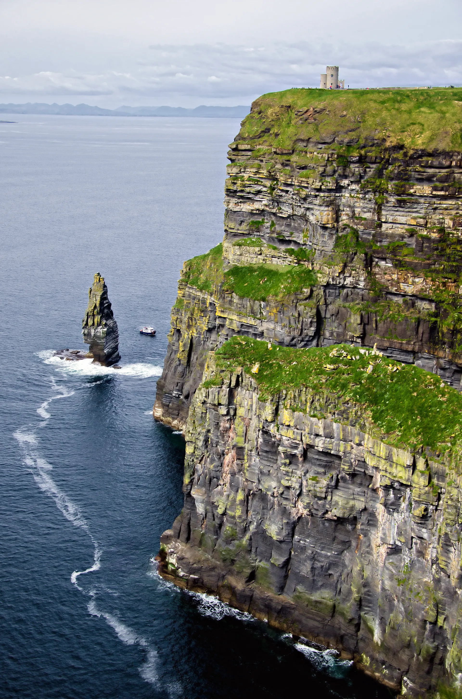

Cliffs of Moher

It would be a crime not to feature the Emerald Isle on this list. The Cliffs of Moher is a sight that never gets old – a majestic expanse of towering rocks high above the churning Atlantic. It's a popular spot, so expect crowds or visit in the evening when the sun sets and the shadows offer an even more dramatic show
Book Tickets